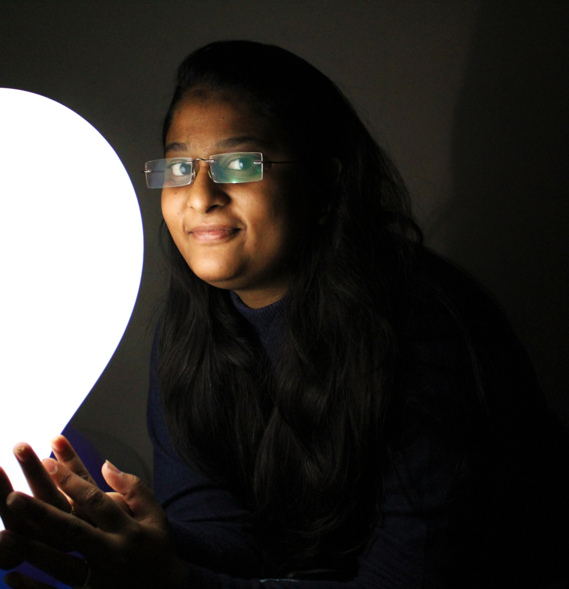

Priyanka
Waghmare
About Me

“Darkness cannot drive out darkness: only light can do that. Hate cannot drive out hate: only love can do that.”
She is magic! A truly adventurous woman with a gypsy soul. Powered by coffee, dark chocolate and wild water. You’ll find her chasing full moons, exploring waterfalls, forests and oceans. Once you meet a woman like this you’ll feel drawn to her alluring energy. She’ll make you feel things you’ve never felt before. Never take a woman like this for granted, they are extraordinary..
She is a warrior capable of slaying the demons in life. She is a pioneer capable of choosing her own path. She is a trailblazer capable of achieving new horizons. Just give her some time and see her bedazzle the world.
She was not able to find her purpose in life. She would smile on the outside, but inside she was going through myriad difficulties. Her laughter was for the outside world, and she kept her sadness hidden deep inside her heart.
I don't know what it was about me that made her tell me about her feelings, emotions, and thoughts.
May be she felt that I could relate to her. Her feelings of loneliness. Her feelings of angst. She felt that I could understand her feelings. Among her friends, no one bothered to find out about her real feelings and emotions. Writers and poets are known to understand the perspectives and feelings of others. And I was a writer and wanderer, never staying at one place for long.
Her resplendent smile :)
Her eyes have shed more tears than the skies
her pen has bled more blood than her heart she sleep with her eyes open wide laughing, she says it's an art.the melancholy that she is they don't know the story of days she spends are warm and cozy at nights, her soul is ripped off. she had gone through so much a heart full of love meet the wrong touch the pain dwell on her past and a broken arm at last expectation pin her down depression has come she stayed sane on her own taking hills , being lonesome but life never gave up on her neither does she climbs up the well of suffer return to life's ecstasy accidently we known eachother through my random dm on twitter i used to call you sister just because i dont know your age number time pass by on its own a hello became deep conversation been a while since a girl caught my interest with less expectation turns to the fullest...She does not want the world to tell her how to live her life. She does not want the world to put her into a category. She will smile even when not all is good with her. She will believe what should not be. And she will dream wild! She is a bird. She just wants to fly in the wide blue sky!